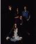

The Enid is an English band led by Robert Godfrey and which has existed now for quite some time. In the seventies the band was quite well-known and revered for their combination of classical music and progressive. Lately little has been heard of them, their latest release, as far as I know, being Tripping The Light Fantastic.